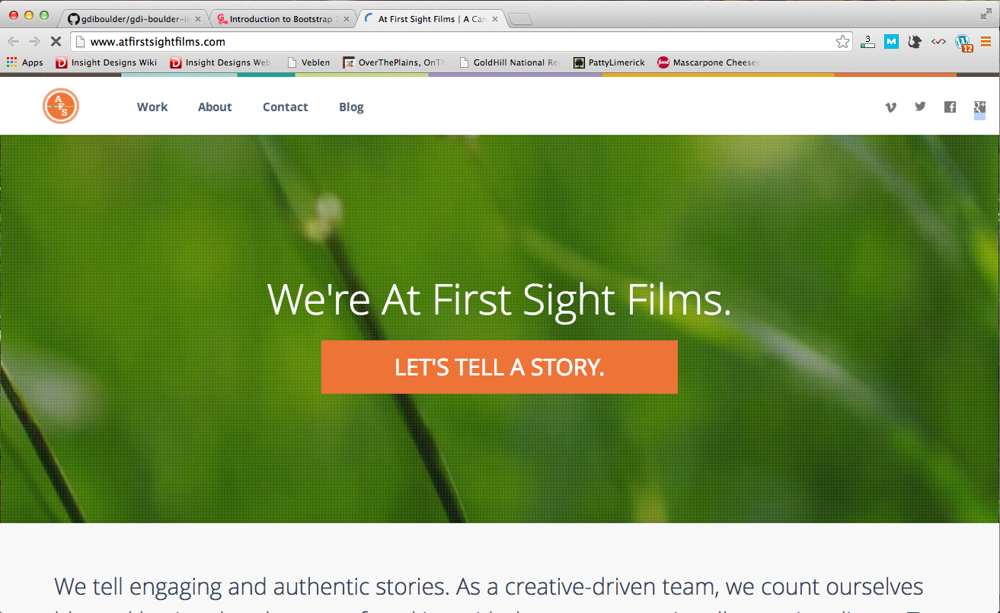
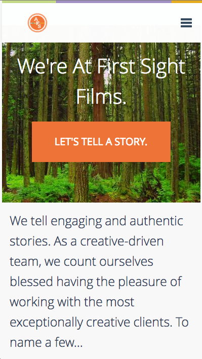

Advanced CSS Techniques
Welcome!
Thanks to our sponsor:

Meet your instructor: Cara Jo Miller
- Co-founder: Girl Develop It Boulder
- Lead Designer: Simple Energy
- E-mail: carajo@girldevelopit.com
- Twitter: @corrinajo
- Lover of all things glitter
Meet your instructor: Caitlin McKenna
- Web Developer: Insight Designs
- Twitter: @caitlinemckenna
- Spotify Playlist Curator
What we will be covering in this workshop
- Media Queries for cross-device CSS
- How to write cross-browser CSS
- How to set CSS defaults
- How to use CSS to enhance your site's performance
- Using CSS Pre-Processors for productivity
Cross-Device CSS

What's the point of a CSS media query?
Media queries are designed to make your life easier by allowing you to control how your elements look on different devices.
Essentially, they are conditional statements that will apply certain style rules to your elements, depending on the device your site is being viewed on.
Using conditional statements, this desktop design:
Also looks great on a tablet:
And rad on a smartphone!
You can also use media queries to make sure your content looks great when it's printed out!
How do media queries work?
A media query consists of a media type and an optional combination of media features. CSS rules inside the query will be applied only if the query is true.
@media <media types> and <media features> { /* media-specific rules */ }
They can also be specified for a linked stylesheet:
<link rel="stylesheet" media="<media types> and <media features>" href="alternative.css" />
Print Styles
All modern browsers support the "print" media type for specifying print styles.
@media print { body { background: white; } #header, #footer { display: none; } .section { page-break-inside: avoid; page-break-after: always; } }
Resolution Queries
Modern mobile browsers support media queries which depend on the device-width and/or orientation:
Targeting iPads:
@media only screen and (min-device-width : 768px) and (max-device-width : 1024px) { img { width: 100%; } }
Resolution Queries
A more general approach is just to query on min-width and max-width, which are calculated based on window size, not device size.
@media screen and (max-width: 640px) { #sidebar { display: none; } }
@media (min-width: 768px) and (max-width: 979px) { #sidebar { width: 200px; } }
Pixel Density Queries
The experimental device-pixel-ratio feature can be used to detect pixel density:
@media only screen and (-webkit-min-device-pixel-ratio: 1.5),
only screen and (-o-min-device-pixel-ratio: 3/2),
only screen and (min--moz-device-pixel-ratio: 1.5),
only screen and (min-device-pixel-ratio: 1.5) {
#logo {
background-image:url(images/icon@2x.png);
}
}
Testing Your CSS
Besides testing on the actual devices or resizing the browser, you can use these tools: